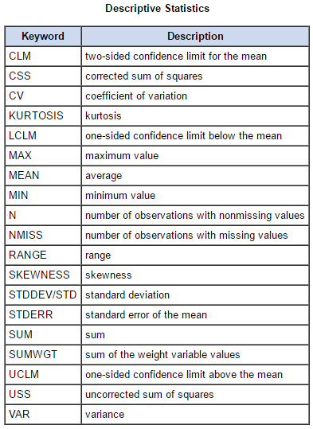
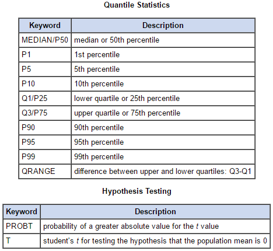
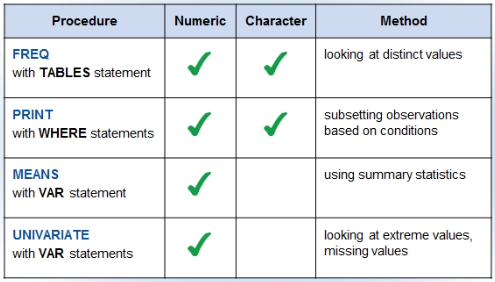
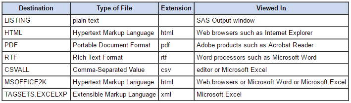

Creating Summary Reports
PROC FREQ to Create Summary Reports¶
- When you're summarizing data, there's no need to show a frequency distribution for variables that have a large number of distinct values
- Frequency distributions work best with variables whose values meet two criteria: variable with categorical values and values are best summarized by counts instead of averages
- Variables that have continuous numerical values, such as dollar amounts and dates, will need to be grouped into categories by applying formats inside the
PROC FREQstep (substitute an specific range of those values by a tag)
1 2 3 4 | PROC FREQ DATA=SAS-data-set <option(s)>; TABLE(S) variable(s) </ option(s)>; <additional statements> RUN; |
PROC FREQproduces frequency tables that report the distribution of any or all variable values in a SAS data set- In the
TABLE(S)statement you specify the frequency tables to produce - Each unique variable's value displayed in the 1st column of the output is called a level of the variable
One-way Frequency Tables¶
To create one-way frequency tables you specify one or more variable names separated by space.
Warning
If you omit the TABLE statement, SAS produces a one-way tables for every variable in the data set, which could be very messy if you have a lot of variables.
1 2 3 4 5 6 7 8 9 10 | PROC SORT DATA=SAS-data-set
OUT=SAS-data-set-sorted;
BY variable_sorted;
RUN;
PROC FREQ DATA=SAS-data-set-sorted ORDER=FREQ <option(s)>;
TABLES variable / NOCUM NOPERCENT OUT=custom-output-name;
BY variable_sorted;
<additional statements>
RUN;
|
NOCUMoption supresses the display of the cummulative frequency and cummulative percent valuesNOPERCENToption supresses the display of all percentagesORDER=FREQoption orders the output in descending frequency orderOUT=option saves the output data set with a custom nameBYoption produces a frequency table for each value ofvariable_sorted(the data set must be sorted by the variable named in the statement)
Crosstabulation Tables¶
- Sometimes it is useful to view a single table with statistics for each distintic combination of values of the selected variables
- The simplest crosstabulation table is a two-way table
1 2 3 | PROC FREQ DATA=SAS-data-set;
TABLES variable_rows * variable_columns / NOFREQ NOPERCENT NOROW NOCOL;
RUN;
|
Information contained in crosstabulation tables (legend):
Frequency: indicates the number of observations with the unique combination of values represented in that cellPercent: indicates the cell's percentage of the total frequencyRow Pct: cell's percentage of the total frequency for its rowCol Pct: cell's percentage of the total frequency for its columnLISToption format: the first two columns specify each possible combination of the two variables; it displays the same statistics as the default one-way frequency tableCROSSLISToption format: it displays the same statistics as the default crosstabulation table
Formatting Variables in PROC FREQ¶
The FORMAT= option allows you to format the frequency value (to any SAS numeric format or a user-defined numeric format while its length is not more than 24) and to change the width of the column (e.g. to allow variable labels to fit in one line).
1 2 3 4 5 | PROC FREQ DATA=SAS-data-set;
TABLES variable1 * variable2 /
FORMAT = <w>.;
FORMAT variable1 $format-name.;
RUN;
|
The FORMAT= option applies only to crosstabulation tables displayed in the default format. It doesn't apply to crosstabulation tables produced with the LIST/CROSSLIST option.
Using the MEANS and UNIVARIATE Procedures¶
PROC MEANS produces summary reports with descriptive statistics and you can create statistics for groups of observations
- It automatically displays output in a report and you can also save the output in a SAS data set
- It reports the number of nonmissing values of the analysis variable (N), and the mean, the standard deviation and minimum/maximum values of every numeric variable in the data set
- The variables in the
CLASSstatement are called classification variables or class variables (they typically have few discrete values) - Each combination of class variable values is called a class level
- The data set doesn't need to be sorted or indexed by the class variables
N Obsreports the number of observations with each unique combination of class variables, whether or not there are missing values (if theseN Obsare identical toN, there are no missing values in you data set)
1 2 3 4 | PROC MEANS DATA=SAS-data-set <statistic(s)>;
VAR analysis-variable(s);
CLASS classification-variable(s);
RUN;
|
To write the report in a new data set (including total addition):
1 2 3 4 5 | PROC MEANS DATA=SAS-data-set NOPRINT NWAY;
OUTPUT OUT=SAS-new-data-set SUM=addition-new-variable;
VAR analysis-variable(s);
CLASS classification-variable(s);
RUN;
|
Format options:
MAXDEC=number(default format =BESTw.)NONOBSFW=number: specifies that the field width for all columns is numberPRINTALLTYPES: displays statistics for all requested combination of class variables
 
How to Use these Procedures for Data Validation¶
PROC FREQ¶
You can use a PROC FREQ step with the TABLES statement to detect invalud numeric and character data by looking at distinct values. The FREQ procedure lists all discrete values for a variable and reports its missing values.
1 2 3 | PROC FREQ DATA=SAS-data-set <ORDER=FREQ>;
TABLES variable;
RUN;
|
- You can check for non-expected variable's values
- You can check for missing values
- You can find duplicated values
The table showing the Number of Variable Levels can indicate whether a variable contains duplicate/missing/non-expected values:
1 2 3 | PROC FREQ DATA=SAS-data-set NLEVELS;
TABLES variable / NOPRINT;
RUN;
|
You can use a WHERE statement to print out only the invalid values to be checked:
1 2 3 4 5 6 | PROC PRINT DATA=SAS-data-set;
WHERE gender NOT IN ('F','M') OR
job_title IS NULL OR
salary NOT BETWEEN 24000 AND 500000 OR
employee IS MISSING;
RUN;
|
You can output the tables to a new data set instead of displaying it:
1 2 3 | PROC FREQ DATA=SAS-data-set NOPRINT; TABLE variable / OUT=SAS-new-data-set; RUN; |
PROC MEANS¶
- The
MIN/MAXvalues can be useful to check if the data is within a range NMISSoption displays the number of observations with missing values
PROC UNIVARIATE¶
PROC UNIVARIATE is a procedure that is useful for detecting data outliers that also produces summary reports of descriptive statistics.
1 2 3 4 5 6 7 | PROC UNIVARIATE DATA=SAS-data-set;
VAR variable(s);
ID variable_to_relate;
HISTOGRAM variables </options>;
PROBPLOT variables </options>;
INSET keywords </options>;
RUN;
|
- If you omit the
VARstatement, all numeric variables in the data set are analyzed - The Extreme Observations table contains useful information to locate outliers: it displays the 5 lowest/highest values by default along with the corresponding observation number. The
IDstatement specifies that SAS will use this variable as a label in the table of extreme observations and as an identifier for any extreme. - To specify the number of listed observations you can use
NEXTROBS= HISTOGRAM/PROBPLOToptions:normal(mu=est sigma=est)creates a normal curve overlay to the histogram using the estimates of the population mean and standard deviationINSETwrites a legend for the graph./ position=nemoves theINSETto the north-east corner of the graph.
To include in the report only one of the automatically produced tables:
- Check the specific table name in the LOG information using
ODS TRACE ON:
1 2 3 4 5 | ODS TRACE ON;
PROC UNIVARIATE DATA=SAS-data-set;
VAR variable(s);
RUN;
ODS TRACE OFF;
|
- Select the wanted table with
ODS SELECT:
1 2 3 4 | ODS SELECT ExtremeObs;
PROC UNIVARIATE DATA=SAS-data-set;
VAR variable(s);
RUN;
|
Summary of Validation Procedures¶

Using the SAS Output Delivery System (ODS)¶
1 2 3 | ODS destination FILE="filename" <options>;
<SAS code to generate the report>
ODS destination CLOSE;
|
- You can have multiple destinations open and execute multiple procedures
- All generated output will be sent to every open destination
- You might not be able to view the file, or the most updated file, outside of SAS until you close the destination
E.g.:
1 2 3 4 5 6 7 8 9 | ODS pdf FILE="C:/output/test.pdf"; (...) ODS pdf CLOSE; ODS csvall FILE="C:/output/test.cvs"; ODS rtf FILE="C:/output/test.rtf"; (...) ODS csvall CLOSE; ODS rtf CLOSE; |
Allowed File Formats and Their Corresponding Destinations¶

You can also export a database to a different format:
- Export to
*.csv:
1 2 3 4 5 | PROC EXPORT DATA=sashelp.class
OUTFILE='c:\temp\sashelp class.csv'
DBMS=CSV
REPLACE;
RUN;
|
- Export to
*.dat:
1 2 3 4 5 | data _null_; set library.SAS-data-set; file 'C:\your-custom-path\your-file-name.dat'; put variable1 variable2 variable3; run; |